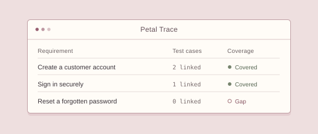
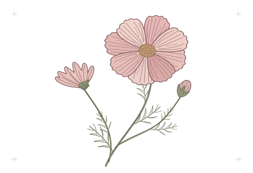
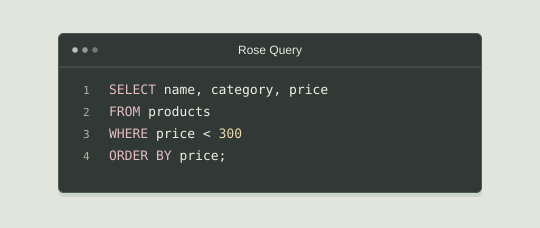

Requirements & testing
Petal Trace
When a requirement changes, which tests need another look? I built Petal Trace to connect requirements, test cases and defects so I can see the gaps in coverage.
I’m a Technical Systems Analyst in Johannesburg. I like sitting with a client to understand what they need, then tracing a workflow, an API call or a database record to see how the system actually works.
I work on telecoms and IoT platforms. Outside work, I build small browser tools and research how teams test software in Scrum.

01 / Work
Two tools you can try in your browser.

Requirements & testing
When a requirement changes, which tests need another look? I built Petal Trace to connect requirements, test cases and defects so I can see the gaps in coverage.

SQL & data
I built Rose Query as a place to practise SQL with a small shop database. You can inspect the tables, try a join and see exactly which rows your query returns.
Design test cases and export them to CSV.
An offline Pomodoro timer that remembers a session.
Playwright tests for an online shop, from catalogue to checkout.
The earlier edition of this portfolio, including its interactive diagnostic.
A responsive magazine about philosophy and literature.
Two-player tic-tac-toe with score tracking.
A mood journal with calendar views and local backups.
A countdown landing page.
A browser drawing app with layers and PNG export.
A blinking bear drawn with HTML and CSS.
An interactive robot and control room built for CodePen.
02 / Background
Johannesburg, South Africa
I came to software through mechanical and mechatronic engineering. I still like taking something apart to understand how it works. These days, it’s more likely to be a workflow.
I studied at the University of Cape Town, where I earned my BSc in Mechanical and Mechatronic Engineering. Working across development, QA and support gave me different ways to look at the same problem. A change can make sense on a diagram and still do something unexpected when real data moves through it.
I’m back at UCT for an MCom in Information Systems. I’m researching how testing contributes to project success in Scrum. I’m interested in what people learn from a test and how that shapes their decision to release a change.
On the creative side, I like a bit of pink and building things I can actually use. That’s where projects like Bunny Burrow, my offline focus timer, and Petal Studio, my drawing app, fit in.
ISTQB Certified Tester (Foundation Level) · ECSA Candidate Engineer in Computer Engineering
03 / Career
I’ve worked on the same kinds of systems from different sides, first as a developer, then in configuration and L2 support, and now as an analyst.
I work with clients, developers, QA and operations teams to agree on scope and follow changes through configuration, testing, deployment and post-release validation.
I configured telecoms and IoT workflows, automated regression checks and used SQL and API tests to investigate defects. I also handled L2 support and checked changes after deployment.
These anonymised examples reflect recurring work on enterprise systems.
I clarified the business rules, exceptions and data needs with the people involved, then mapped the workflow and wrote acceptance criteria the team could use to build and test it.
I reproduced the reported behaviour, followed the API request to the database and compared the stored values with what appeared on screen. That gave the team a specific fault to investigate and a way to check the fix.
I reviewed the dependencies, tested the configuration and checked the API and database results. After deployment, I verified that the change behaved as expected.
04 / Contact